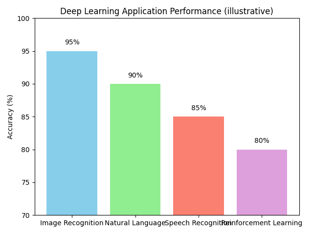

ディープラーニングの応用
ディープラーニング（深層学習）は、機械学習の一分野であり、ニューラルネットワークを多層化することで複雑な特徴を自動的に抽出する技術です。画像や音声、自然言語など多様なデータに適用でき、人工知能の発展を支える中心的な手法となっています。
仕組みの概略
ディープラーニングは、人間の脳の神経回路網を模倣したニューラルネットワークの一種であり、入力層・隠れ層・出力層から成ります。隠れ層が複数重なることで、入力データの抽象度の高い特徴を段階的に捉えることができるようになります。
代表的なモデル
ディープラーニングには目的に応じてさまざまなアーキテクチャが提案されています。代表的なモデルをいくつか紹介します。
- 畳み込みニューラルネットワーク（CNN）: 画像認識で高い性能を発揮し、入力画像から局所的な特徴を効率的に抽出します。
- リカレントニューラルネットワーク（RNN）: 系列データの処理に適しており、時間的な依存関係を捉えることができます。
- 敵対的生成ネットワーク（GAN）: 2 つのネットワークが競い合うことで、リアルな画像やデータを生成します。
- トランスフォーマーモデル: 自然言語処理で広く用いられ、並列計算がしやすく大量データの学習に適しています。
応用例
ディープラーニングは以下のような分野で活用されています。
- 画像認識: 写真や医療画像から対象を分類・検出する。
- 音声認識: 音声信号から文字列への変換や、話者認識。
- 自然言語処理: 翻訳や要約、質問応答など。
- 異常検知: センサー情報や監視カメラ映像から異常なパターンを検出する。

注意点
ディープラーニング活用時の注意点
ディープラーニングは大量のデータと計算資源を必要とし、モデルの解釈性が低い（いわゆるブラックボックス問題）などの課題があります。これらの問題に対処するために、少量データで学習するための転移学習や、モデルの説明性を向上させる研究も進められています。